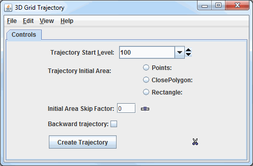
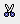
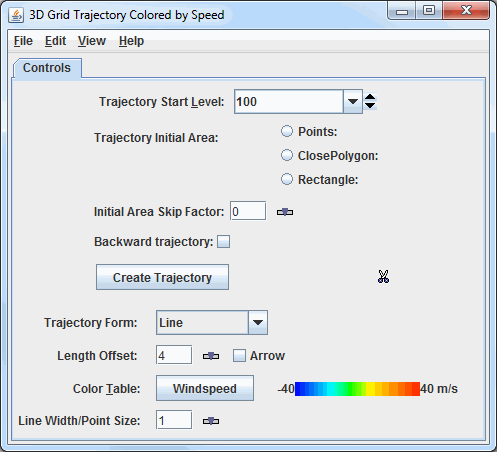

Overview
The Grid Trajectory display types are capable of working with gridded data containing u and v-wind components, as well as a scalar quantity to color them by. Both 2D and 3D trajectories can be created dependent on the fields contained in the data. The relevant display types are:
- 2D Grid Trajectory
- 2D Grid Trajectory Colored by Speed
- 3D Grid Trajectory
- 3D Grid Trajectory Colored by Speed
- Trajectory Colored by Another Parameter
The Grid 2D Trajectory or Grid 3D Trajectory formulas can be used to access these display types. The formulas will request for all of the fields to pass through it, including the u- and v-wind components, the vertical component, and a color-by component. An alternative to the formulas is utilizing the derived 2D and 3D fields of the data, Grid 2D Trajectory and Grid 3D Trajectory. When using these fields, all the user needs to specify is the scalar quantity when using the Trajectory Colored by Another Parameter display type, and McIDAS-V will pull out the relevant u- and v-wind components (as well as the vertical component when creating 3D Trajectories).
After clicking Create Display and choosing the field(s), the Layer Controls tab of the Data Explorer will appear, where various properties of the trajectories can be set:

Image 1: Grid Trajectories Layer Controls
Properties
- Trajectory Start Level - Sets the vertical level where the trajectories will originate from.
- Trajectory Initial Area - Allows for determining the geographical domain where the trajectories will originate from. While the trajectories originate at these locations, they are not bounded by the Trajectory Initial Area. They can extend beyond these boundaries up to the geographical extent of the data. Multiple Trajectory Initial Areas of the same type can be drawn, but different types cannot be mixed. Note that if no Trajectory Initial Area is selected, trajectories will originate over the entire domain of the data:
- Points - Plots individual points in the Main Display where the trajectories will originate from.
- ClosePolygon - Allows for clicking and dragging in the Main Display window to draw a shape around any desired area. The trajectories will originate from everywhere inside of the shape. By default, they will be spaced apart at the resolution of the grid.
- Rectangle - Allows for clicking and dragging in the Main Display window to draw a rectangle around any desired area. The trajectories will originate from everywhere inside of the rectangle. By default, they will be spaced apart at the resolution of the grid.
- Initial Area Skip Factor - Sets the skip factor of the trajectories. This is an option when using ClosePolygon and Rectangle Trajectory Initial Areas. By default, this value is 0, meaning that the trajectories will be spaced by the model resolution. This can changed by typing a new value into the field and pressing Enter, or by using the slider. Raising this value will result in fewer trajectories being drawn in the display.
- Backward trajectory - Creates backward trajectories instead of the default, which is forward trajectories.
- - Creates the trajectories utilizing the information provided in the Trajectory Start Level, Trajectory Initial Area, and Initial Area Skip Factor fields. These trajectories will be displayed in the Main Display window.
-  Remove existing glyphs and trajectories - Removes any trajectories and trajectory initial areas from the Main Display window.
Once is clicked to display the trajectories, the options in the Layer Controls will expand to include more controls:

Image 2: Grid Trajectories Layout Tab
Properties
- Trajectory Form - Allows for selecting the type of trajectory used in the display. The options are Line, Ribbon, Cylinder, Deform Ribbon, and Point.
- Length Offset - Sets the number of timesteps to include in each trajectory.
- Arrow - Adds an arrow head to the trajectories if the Line Trajectory Form is selected.
- Color Table - Shows the active color table and the associated high and low data values in the units of the display. As the mouse pointer is moved over the color bar, the value at a particular color is shown. Right click on the color bar or click on the button that displays the name of the Color Table to make modifications to the color bar. This allows for opening the Color Table Editor, changing the range, selecting other color tables, etc. This option sets the color of the trajectories drawn in the Main Display window. This control is available if the trajectories are colored by speed or another scalar parameter, otherwise, a Color dropdown menu will be available to set the color of the trajectories.
- Line Width/Point Size - Sets the thickness of the trajectory lines or points in the Main Display window. This can be changed by typing a value into the field and pressing Enter, or by using the slider. The default value is 1.
Menus
Many of the menu items seen utilizing this display are standard options that can be found in the Menus section of the Layer Controls page. However, there are a couple of options unique to this display.
The File menu has these unique options:
- Export Drawing - Allows for exporting the Trajectory Initial Area as a drawing file (*.xgrf). Load as map data can be selected as well, which will add the shape to the Field Selector. This exported drawing can then be loaded again in subsequent sessions using Import Drawing.
- Import Drawing - Allows for importing a drawing file (*.xgrf) which draws a Trajectory Initial Area. Once the drawing has been imported, can be clicked and trajectories the will be drawn using this shape as the Trajectory Initial Area